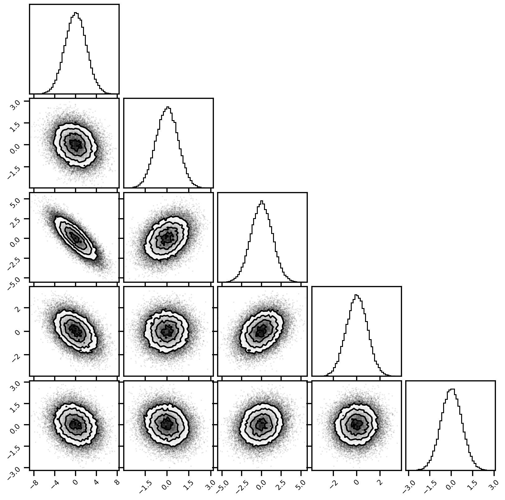

Entropy Estimator - K-NN
Contents
Entropy Estimator - K-NN¶
import sys, os
from pyprojroot import here
# spyder up to find the root
pysim_root = "/home/emmanuel/code/pysim"
# append to path
sys.path.append(str(pysim_root))
import numpy as np
# MATPLOTLIB Settings
import matplotlib as mpl
import matplotlib.pyplot as plt
%matplotlib inline
%config InlineBackend.figure_format = 'retina'
# SEABORN SETTINGS
import seaborn as sns
import corner
sns.set_context(context="talk", font_scale=0.7)
%load_ext autoreload
%autoreload 2
%load_ext lab_black
from mutual_info.mutual_info import entropy as mi_entropy
from npeet.entropy_estimators import entropy as npeet_entropy
Demo Data - Gaussian¶
from pysim.data.information.gaussian import generate_gaussian_data
# parameters
n_samples = 50_000
n_features = 25
# create seed (trial number)
res_tuple = generate_gaussian_data(n_samples=n_samples, n_features=n_features,)
fig = corner.corner(res_tuple.X[:, :5], bins=50)

K-Nearest Neighbors¶
from mutual_info.mutual_info import entropy as mi_entropy
from npeet.entropy_estimators import entropy as npeet_entropy
print(f"True Estimator: {res_tuple.H:.4f} nats")
H_mi = mi_entropy(res_tuple.X, k=10, transform=None)
print(f"H_mi Estimator: {H_mi:.10f} nats")
H_npeet = npeet_entropy(res_tuple.X, k=10, base=np.e)
print(f"NPeet Estimator: {H_npeet:.10f} nats")
True Estimator: 26.5180 nats
H_mi Estimator: 29.5426287400 nats
NPeet Estimator: 30.7156496346 nats
from pysim.data.information.gaussian import generate_gaussian_mi_data
# parameters
n_samples = 2_000
n_features = 25
res_tuple = generate_gaussian_mi_data(n_samples, n_features)
res_tuple.MI
5.919772283748145
from mutual_info.mutual_info import mutual_information as gael_mi
from npeet.entropy_estimators import mi as npeet_mi
# parameters
n_samples = 10_000
n_features = 10
print(f"True Estimator: {res_tuple.MI:.4f} nats")
MI_gael = gael_mi((res_tuple.X, res_tuple.Y), k=3, transform=None)
print(f"H_mi Estimator: {MI_gael:.10f} nats")
MI_npeet = npeet_mi(res_tuple.X, res_tuple.Y, k=3, base=np.e)
print(f"NPeet Estimator: {MI_npeet:.10f} nats")
True Estimator: 5.9198 nats
H_mi Estimator: -1.0757337058 nats
NPeet Estimator: 1.4802056201 nats
%%time
from hyppo.independence import RV
rv_clf = RV()
rv_clf.statistic(res_tuple.X, res_tuple.Y)
CPU times: user 3.51 ms, sys: 5.07 ms, total: 8.57 ms
Wall time: 2.25 ms
0.9381932669226358
%%time
from hyppo.independence import Dcorr
dcorr_clf = Dcorr()
dcorr_clf.statistic(res_tuple.X, res_tuple.Y)
CPU times: user 1.27 s, sys: 3.95 s, total: 5.21 s
Wall time: 410 ms
0.9184229528341773
%%time
from hyppo.independence import Hsic
hsic_clf = Hsic(compute_kernel="linear")
hsic_clf.statistic(res_tuple.X, res_tuple.Y)
CPU times: user 894 ms, sys: 2.9 s, total: 3.79 s
Wall time: 347 ms
0.9381496748896323
%%time
from hyppo.independence import Hsic
hsic_clf = Hsic(compute_kernel="gaussian")
hsic_clf.statistic(res_tuple.X, res_tuple.Y)
CPU times: user 1.84 s, sys: 4.75 s, total: 6.6 s
Wall time: 761 ms
0.937042671435708
%%time
from hyppo.independence import MGC
mgc_clf = MGC()
mgc_clf.statistic(res_tuple.X, res_tuple.Y)
CPU times: user 2.61 s, sys: 4.7 s, total: 7.31 s
Wall time: 1.71 s
0.9184224379905574
%%time
from hyppo.ksample import Energy
energy_clf = Energy()
energy_clf.statistic(res_tuple.X, res_tuple.Y)
CPU times: user 2.15 s, sys: 3.91 s, total: 6.06 s
Wall time: 1.29 s
0.6524979193309077
%%time
from hyppo.ksample import MMD
mmd_clf = MMD(compute_kernel="gaussian")
mmd_clf.statistic(res_tuple.X, res_tuple.Y)
CPU times: user 2.57 s, sys: 3.67 s, total: 6.24 s
Wall time: 2.37 s
0.0012516668057823018
Volume¶
def volume_unit_ball(d_dimensions: int, norm=2) -> float:
"""Volume of the unit l_p-ball in d-dimensional
Parameters
----------
d_dimensions : int
Number of dimensions to estimate the volume
norm : int, default=2
The type of ball to get the volume.
* 2 : euclidean distance
* 1 : manhattan distance
* 0 : chebyshev distance
Returns
-------
vol : float
The volume of the d-dimensional unit ball
References
----------
[1]: Demystifying Fixed k-Nearest Neighbor Information
Estimators - Gao et al (2016)
"""
# get ball
if norm == 0:
return 1.0
elif norm == 1:
raise NotImplementedError()
elif norm == 2:
b = 2.0
else:
raise ValueError(f"Unrecognized norm: {norm}")
numerator = gamma(1.0 + 1.0 / b) ** d_dimensions
denomenator = gamma(1.0 + d_dimensions / b)
vol = 2 ** d_dimensions * numerator / denomenator
return vol